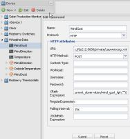

Hi all,
I would like to have some guidence in my search on knowledge.
I am building a tech demo for my home, just to see if its possible to build wat i have in mind for some time.
In short, I would like to combine Weather information, comming home detection, XBMC and Philips Hue all togetter.
At this point i am trying to figure out how to:
- use variables in HTTP addresses and data
- a way to build an action based on a sensor or variabel.
Unfortunatly i still havent found the right information.
Any help would be great.
P.S. I am running OpenRemote on my Syno.
{kind=link}
|
 http://ds212:8688/private/Lauwersoog.xml //response/current_observation/wind_gust_kph I did use XPATH round(concat(//response/current_observation/wind_gust_kph,"")) because I needed an integer value for further processing. I did use the following URL's to retrieve the XML files http://api.wunderground.com/api/<your personal key>/conditions/q/nl/<your place>.xml http://api.wunderground.com/api/<your personal key>/forecast/q/nl/<your place>.xml |
|
Here is the page that describes how to deal with XPath |
{kind=link}